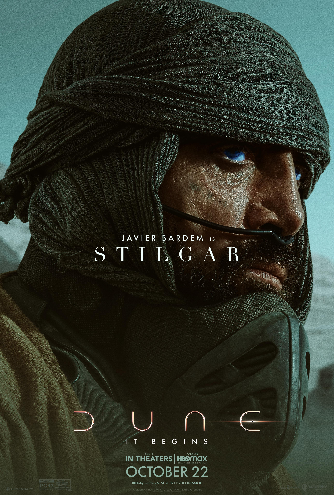

House Atreides
I must not fear. Fear is the mind-killer.-Paul Atreides
A great man doesn't seek the lead, he is called to it.-Duke Leto
I will protect Paul with my life.-Lady Jessica
If wishes were fishes, we'd all cast nets.-Gurney Halleck
Dreams make good stories but everything important happens when we are awake-Duncan Idaho

Duke's son sees too much.-Dr. Yueh
A popular man arouses the jealousy of the powerful.-Thufir Hawat
House Harkonnen
This is my dune. Kill them all.-Baron Harkonnen
Who is this Muad'Dib?-Beast Rabban
It is by will alone I set my mind in motion. It is by the juice of Sapho that thoughts acquire speed, the lips acquire stains, the stains become a warning.-Piter De Vries
Fremen
You have strength. You shall be known as Usual - which is the strength of the base of the pillar. This is your secret name in our troop. But, you must choose the name of manhood, which we will call you openly.-Stilgar

My planet Arrakis is so beautiful when the sun is low.-Chani
He shall know your ways as if born to them.-Liet Kynes